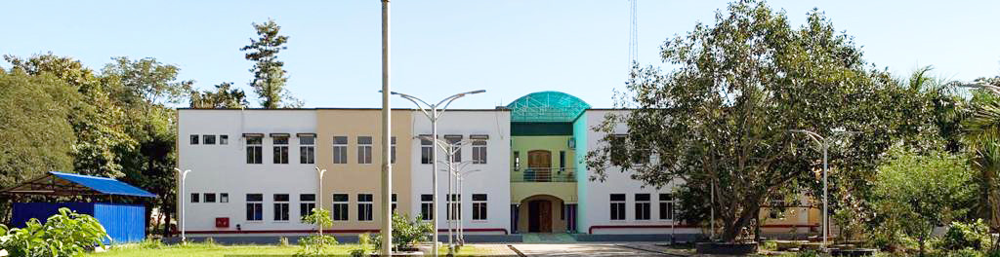

NIELIT Imphal Information Portal |
|
| |HOME | Service | COurses Offer |Faculty | Admission | Contact Us | | |
|  NIELIT is an Autonomous Scientific Society under the administrative control of Ministry of Electronics & Information Technology (MoE&IT), Government of India, was set up to carry out Human Resource Development and related activities in the area of Information, Electronics & Communications Technology (IECT). NIELIT is engaged both in Formal & Non-Formal Education in the area of IECT besides development of industry oriented quality education and training programmes in the state-of-the-art areas. NIELIT has endeavoured to establish standards to be the country’s premier institution for Examination and Certification in the field of IECT. It is also one of the National Examination Body, which accredits institutes/organizations for conducting courses in IT in the non-formal sector. NIELIT’s holistic quality policy entails offering its courses through painstakingly screened accredited institutes to ensure seriousness at both the institute and individual level. As on date, NIELIT has forty seven (47) centers located at Agartala, Aizawl, Ajmer, Alawalpur (Saksharta Kendra), Aurangabad, Bhubaneswar, Calicut, Chandigarh, Chennai, Chuchuyimlang, Churachandpur, Daman, Delhi, Dibrugarh, Dimapur, Gangtok, Gorakhpur, Guwahati, Haridwar, Imphal, Itanagar, Jammu, Jorhat, Kargil, Kohima, Kolkata, Kokrajhar, Kurukshetra, Lakhanpur (Saksharta Kendra), Leh, Lucknow, Lunglei, Majuli, Mandi, Pasighat, Patna, Pali, Ranchi, Ropar, Senapati, Shillong, Shimla, Silchar, Srinagar, Tezpur, Tura and Tezu with its Headquarters at New Delhi. It is also well networked throughout India with the presence of about 700 + institutes. These Centres provide quality education & training programmes in Information, Electronic Design and related technologies/areas on long term and short term basis. NIELIT Imphal (erstwhile CEDT/CEDTI/DOEACC) became operational in July 1989. There are 02 Extension Centres of NIELIT Imphal at Churachandpur & Senapati Districts of Manipur. The Centre is located at Akampat, about 5 kms. in the south-east direction from the heart of the Imphal city. Spread over an area of more than 20 acres, it houses the main Institute Buildings consisting of Administrative wing, Lecture Halls, Faculty Rooms, Computer Labs, Mechanical Workshop and several labs in the field of Information, Electronics & Communication Technology. Besides the main institute building, the campus houses the staff quarters, students’ hostels, electrical substation and other host of essential facilities. NIELIT Imphal is participating in Nation Building by conducting various long term & short term skill development courses in the fields of Electronics & Communication Engineering and Information Technology. NIELIT Imphal also offers various short term courses in the skill development sector with an objective of enhancing the employability of the youth of the state and country as a whole as mandated by the Govt. of India under the National Skill Development policy. |
Come Hurry up to get admission in Future Skill prime Courses. Free for Sc/ST Candidates |
| Designed and Developed By: NIELIT, IMPHAL | |